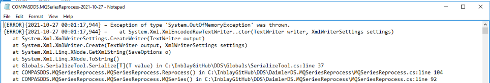
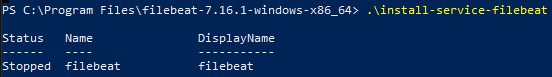

Filebeat
Se instala en los sistemas que generan datos en ficheros como el siguiente: 
Instalación
- Descargar el paquete del sitio oficial
- Descomprimir el fichero en la ubicación deseada.
- Abrir powershell con permisos de administración y ubicarse en la carpeta de instalcion de Filebeat y ejecutar el siguiente comando para instalarlo como servicio de Windows
.\install-service-filebeat
Configuración
El archivo de configuración es Filebeat.yml y se encuentra en la ruta C:\Program Files\filebeat
En la sección llamada filebeat.inputs: se indica la dirección de los ficheros logs a enviar, lo elementos hijos tienen la siguiente estructura:
- type: log
enabled: true
paths: - C:\DDS Win Services\COMPASDDS.MaintenaceService\Logs\COMPASDDS.MaintenanceService.log
ignore_older: 170h
fields:
service name: CompasDDS.MaintenanceService
system: dds
multiline.pattern: ^{
multiline.negate: true
multiline.match: after
exclude_lines: ['{INFO}.']
donde:
type: logEs el tipo de archivo a procesar, en este casoo son de extension tipo .logenabled: truese habilita este inputpaths:se especifica la ruta del archivo logfields:en este apartado se agregan campos personalizados, los que se agregaron fue para poder filtrar los logs por sistema y por nombre de servicio.multiline.patternCuando se cumpla ese patrón Filebeat sabrá que inicia un nuevo registro de logmultiline.negateniega como una nueva linea lo que no cumpla el patrón anteriormultiline.matchindica hcia qué parte de la cadena debe analizarexclude_linesexcluye lineas que empiezen por cierto patrón. Algunos sistemas como el DDS generan una cantidad excesiva de logs, y se decidió incluir sólo los de tipoERROR.
Se puede optar por incluir metada de Filebeat que da información acerca del servidor donde está alojado, se incluyó para incluir el nombre del host. Para habilitarlo:
processors:
- add_host_metadata:
netinfo.enabled: true
Por último se establece la dirección IP del servidor con Logstash que hará el tratamiento de los datos:
output.logstash:
# The Logstash hosts
hosts: ["10.91.116.37:5044"]
En la imagen de la Arquitectura General se indica la conexón existente entre cada servidor. Una vez agregados todo los inputs se inicia el servicio.